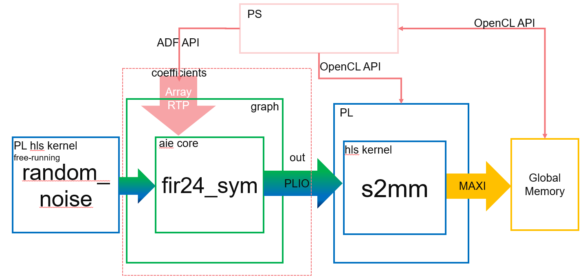

This step demonstrates how runtime array parameters can be passed to kernels. You will change the filter coefficient at runtime and observe the result. The system to be implemented is as follows.

Note: The default working directory in this step is “step3”, unless specified explicitly otherwise.
aie/fir24_sym_param.hgives a forward declaration of a 24-tap symmetric FIR filter:
void fir24_sym(input_window<cint16> * iwin, output_window<cint16> * owin, const int32(&coeffs)[12]);
The filter has an input and output window which consumes and produces complex samples. This filter differs from previous filters you have seen because the coefficients of the filter can be set as a kernel parameter and changed on each invocation. The implementation of the filter is in aie/kernels/hb24.cc.
The filter coefficients are given in:
data/narrow_filter.txt (with a normalized bandwidth of 0.3 pi)
data/wide_filter.txt (with a normalized bandwidth of 0.8 pi)
Examine aie/graph.h again. Notice the code to connect the coefficients input port of the graph to the coeffs parameter of the filter kernel. This should be specified as an asynchronous runtime parameter (with adf::async).
// connect filter coefficients
connect< parameter >(coefficients, async(fir24.in[1]));
Check aie/graph.cpp. Examine the code to update the coefficients using narrow_filter in the ping buffer for 16 iterations.
Then update the coefficients using wide_filter in the pong buffer for another 16 iterations. Note that graph.cpp specifies the narrow_filter and wide_filter coefficients in int arrays based on the data in the filter files.
//run for 16 iterations, update narrow filter coefficients, wait, update wide filter coefficients, run for 16 iterations
gr.update(gr.coefficients, narrow_filter, 12);
gr.run(16);
gr.wait();
gr.update(gr.coefficients, wide_filter, 12);
gr.run(16);
In this snippet, the first graph update call initializes the coefficients parameter using the narrow_filter with 12 elements for the first 16 iterations. The wait() is blocking, and forces the execution to wait until the first 16 iterations finish. Subsequently, the next update call initializes the coefficients parameter using wide_filter with 12 elements for the next 16 iterations. The number of iterations are specified as a parameter to the run() API. Note that update() has a third parameter that speicfies the size of the array to be updated.
Compile the AI Engine graph (libadf.a) using the AI Engine compiler:
make aie
After the AI Engine graph (libadf.a) has been generated, verify for correctness using the AI Engine simulator:
make aiesim
After simulation completes, you should see output.txt under aiesimulator_output/data. You can compare output.txt with the golden reference in data/golden.txt using the following commands in command line:
grep -v T aiesimulator_output/data/output.txt > aiesimulator_output/data/output_data.txt
diff -w aiesimulator_output/data/output_data.txt ./data/golden.txt
If you have MATLAB or Octave, you can use the following script to visualize the data:
data=load('./aiesimulator_output/data/output_data.txt', '-ascii');
cxdata = data(:,1) + data(:,2)*i;
narrow_spectrum = 20*log10(abs(fftshift(fft(cxdata(1:1024)))));
wide_spectrum = 20*log10(abs(fftshift(fft(cxdata(1025:2048)))));
plot(narrow_spectrum);

plot(wide_spectrum);

The pl_kernels directory contains a kernel that generates samples of random noise. The noise generator is implemented as a free-running programmable logic (PL) kernel, with samples consumed by the filter:
extern "C" void random_noise(hls::stream<std::complex<short> > & out) {
#pragma HLS INTERFACE axis port=out
#pragma HLS INTERFACE ap_ctrl_none port=return
The PL kernel has two #pragma specified for vitis HLS. #pragma HLS INTERFACE axis port=out indicates that port “out” will be implemented with an AXI4-Stream interface, while #pragma HLS INTERFACE ap_ctrl_none port=return indicates that the kernel has no block control signals (i.e., it is a free-running kernel). Free-running means that the kernel will keep running after the FPGA has been configured, the clock has been activated, and the reset is deactivated. The execution of a free-running kernel depends on the availability of input data, or readiness of a receiving buffer. It does not require explicit control in the host code when running aiesimulator, HW emulation, and HW flows.
PL kernels need to be compiled into Xilinx object (.xo) files. Run the following make command to compile it:
make -C pl_kernels
The corresponding v++ -c command is:
v++ -c --platform xilinx_vck190_base_202120_1 -k random_noise random_noise.cpp -o random_noise.xo --verbose --save-temps
The Makefile rule targets introduced in Synchronous update of scalar RTP and Asynchronous update of scalar RTP still apply here. Details about tool options and host code in Synchronous update of scalar RTP are similar. However, you can just choose to run following make command to launch HW emulation:
make run_hw_emu
And in the Linux prompt, run the following commands:
mount /dev/mmcblk0p1 /mnt
cd /mnt
export XILINX_XRT=/usr
export XCL_EMULATION_MODE=hw_emu
./host.exe a.xclbin
To exit QEMU press Ctrl+A, x.
For hw mode, run following make command to generate an SD card package:
make package TARGET=hw
And in hardware, after booting Linux from the SD card, run following commands in the Linux prompt:
export XILINX_XRT=/usr
cd /mnt/sd-mmcblk0p1
./host.exe a.xclbin
The host code is self-checking. It will check the output data against the golden data. If the output matches the golden data, after the run is complete, it will print the following:
TEST PASSED
In this step you learned about:
The concepts of asynchronous update of array RTP
How to control the execution between different RTP updates
Free-running PL kernel
Next, review Asynchronous Update of Array RTP Update for AI Engine Kernel.
==========
GitHub issues will be used for tracking requests and bugs. For questions go to forums.xilinx.com.
Licensed under the Apache License, Version 2.0 (the “License”); you may not use this file except in compliance with the License.
You may obtain a copy of the License at http://www.apache.org/licenses/LICENSE-2.0
Unless required by applicable law or agreed to in writing, software distributed under the License is distributed on an “AS IS” BASIS, WITHOUT WARRANTIES OR CONDITIONS OF ANY KIND, either express or implied. See the License for the specific language governing permissions and limitations under the License.
XD001 | © Copyright 2020-2021 Xilinx, Inc.
==========